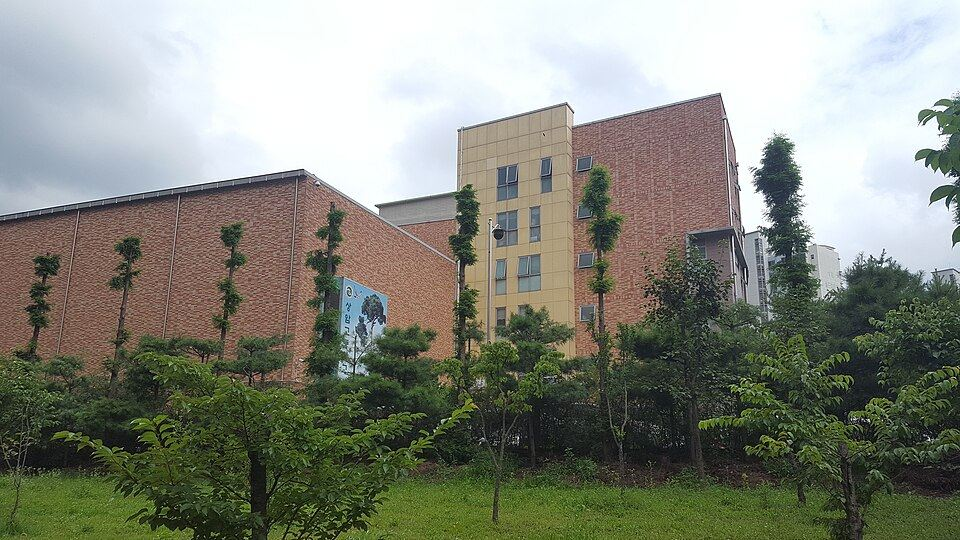

마포구는 동네마다 학교 분위기가 꽤 다릅니다. 합정·서교 쪽 서교중학교·성사중학교는 홍대 인근이라 예체능 진학을 함께 보는 학생이 많고, 공덕·염리 쪽 숭문중·숭문고와 광성고는 내신 경쟁이 촘촘합니다. 상암 쪽 상암중·상암고는 신도시형이라 학부모님 관심이 높고요. 그래서 마포구 과외는 어느 동네, 어느 학교인지에 따라 맞는 선생님이 달라집니다.
오늘은 마포구에 직접 찾아가는 선생님 중 두 분을 소개합니다. 한 분은 초등~중등 수학, 한 분은 영어·수학을 11년째 가르치는 분입니다.
① 문ㅇ연 선생님 — 초등·중등 수학, 서술형을 차근차근
문ㅇ연 선생님 여선생님
초등학교와 고등학교에서 수업보조교사로 활동했고, 서울시 디지털튜터 사업(초등)에도 참여한 초등수학 전문 선생님입니다. 수학을 처음부터 싫어하는 아이는 없다는 생각으로, 학생에게 친근하게 다가가 공부하는 재미를 먼저 알게 하는 수업을 합니다.
특히 아이들이 손을 놓기 쉬운 서술형 문제를 차근차근 풀어내는 훈련에 강점이 있습니다. 서교중·성사중처럼 수행평가와 서술형 비중이 큰 학교에서 "답은 맞는데 과정에서 감점되는" 학생에게 잘 맞습니다. 평일 낮 시간대라 초등 하교 직후, 중등 방과 후 수업에 적합합니다.
문ㅇ연 선생님 상세 프로필 →② 허ㅇ 선생님 — 영어·수학 11년, 마포 전역 방문
허ㅇ 선생님 남선생님
마포구 안에서는 거의 모든 동네에 찾아갑니다. 주말도 가능해서 평일에 학원 일정이 빡빡한 학생이 토·일에 보강하기 좋습니다. 시간 약속을 철저히 지키고 예의 바른 선생님이라는 점을 학부모님들이 먼저 이야기합니다.
수업은 학년별로 필요한 게 다르다는 걸 전제로 짭니다. 초등 영어는 단어·읽기·쓰기, 예비 중등은 문법까지, 중등은 내신과 수행평가를 함께 챙깁니다. 수학도 초등 단원평가부터 중등 내신까지 같은 선생님에게 이어서 배울 수 있어서, 숭문중이나 아현중에서 영어·수학을 한 번에 관리하고 싶은 가정에 맞습니다. 고1 영어 내신까지 이어집니다.
허ㅇ 선생님 상세 프로필 →어떤 선생님이 우리 아이에게 맞을까
- 초등 고학년 ~ 중등, 수학 서술형이 약하다면 — 문ㅇ연 선생님. 평일 낮·오후 시간대.
- 영어·수학을 한 분에게 맡기고 싶거나 주말 수업이 필요하다면 — 허ㅇ 선생님. 마포 전역·주말 가능.
- 고2 이상 수학은 두 분 모두 범위 밖입니다. 마포구 수학 선생님 전체에서 화상 수업 포함으로 찾아드립니다.

마포구 학교별 과외 안내
학교마다 시험 출제 경향과 수행평가 비중이 달라서, 학교별로 준비법을 따로 정리해 두었습니다.
- 서교중학교 과외 · 성사중학교 과외 · 성산중학교 과외
- 숭문중학교 과외 · 숭문고등학교 과외 · 아현중학교 과외
- 광성중학교 과외 · 광성고등학교 과외 · 홍대부고 과외
- 상암중학교 과외 · 상암고등학교 과외 · 서울여고 과외
👉 마포구 관리 학교 25곳 전체와 방문 가능 선생님 보기